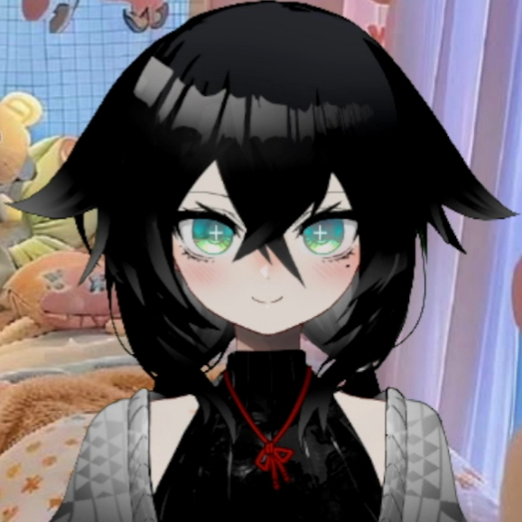
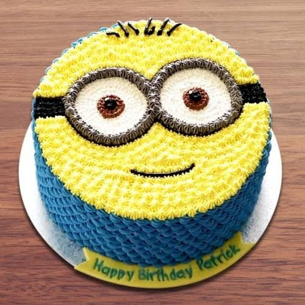

Ahora que estan aqui, permitanme hablarles de alguien muy importante, no solo para mi, sino para miles de personas.
*Destellos epicos con musica*

Inteligente, guapa, amable, habilidosa, terca, cariñosa, buena gente, descuidada, a veces autodestructiva y otras veces migajera.
Asumiendo que ya saben que dia es, tenemos que hacer algo especial por ella, y, si estan listos...

Sin quitarles mas minutos u horas de su tiempo (en el caso del anfitrion). Comencemos este hermoso, bello y fantastico viaje por...ya veran ;]
¿Como describiria usted a Yuuhni en 3 palabras?
"Carinhosa, atenciosa, divertida" - Angel_Gui
"Enana, Enojona, Especial. Perate, cambia el enojona por Linda sino se enoja" - Ciudadano medieval que temia por su vida
"Fuerte, admirable y buena persona" - Miembro enmascarado del staff que prefirio el anonimato
"Chaparra, comelona y atenta" - Elosobee
"Migajera, enana y buena persona" - Alexter
Cosas que, segun su anfitrion, le representan:
Color: Blanco.
Animal: Panda o sino un cuy o una ardilla.
Bebida: bebidas alcoholicas :P
Juego: League Of Legends (deje esa vaina, manita).
Pelicula: Los Minions.
Serie: El Mentalista.
Momento del dia: Amanecer bien bonito si que si.
Clima: Soleado ligeramente nublado.
Objeto: Latigo.
Cosas que probablemente no sabe de ella misma (o quizas si, y eso tiraria mi hermoso trabajo a la basura):
1: Es la razon por la que varias personas siguen aqui o han dado el esfuerzo de seguir un dia mas.
2: Su presencia nos alegra el dia.
3: Su voz nos relaja y transmite tranquilidad.
4: Nos inspira a ser mejores personas.
5: Muchas de las cosas que dice nos hace pensar e incluso cambiar ciertos habitos destructivos nuestros.
6: Pienso en ella cuando tengo un mal dia...aunque no hace falta que lo tenga para que venga a mi mente.
7: Ha logrado que varias personas en su comunidad consigan buenas amistades.
8: Su risa es muy bonita.
9: Es una persona muy valiosa que nos doleria mucho perder.
10: Su fuerza nos inspira a esforzarnos una vez mas.
11: Es una buena persona.
12: Es un buen ejemplo.
13: Siempre le deseamos buenos dias.
14: No nos gusta que se aisle y se descuide a ella misma (o, no nos gustaria que haga eso).
15: Es de mis personas favoritas.
16: Su forma de ser consiguió que me quedara en sus streams aunque el contenido no sea de mi interes
17: Consiguió que no me aisle en auto destruccion y aceptara ser parte de una comunidad.
Pequeñas cosas que me hacen pensar en ella:
Un amanecer.
Las flores.
Los colores pasteles.
Los cuys.
Los patos.
Los pandas.
La musica tranquila.
La musica que me recomendó.
El League Of Legends.
Tellonym.
Gartic Phone.
Make it meme.
"Puta que rico eh".
La cancion de los gorilas.
Momentos de ella que no olvido:
Cuando lloró porque la molestabamos en el karaoke esa vez.
"YO? Una Tsundere?".
"Si donan 5 dolares se les añaden 2".
"Gente, me embargaron la casa".
"Te ganaste un audio *sigue debiendo a dia de hoy*".
"Quien chucha te crees para decir que no puedes?".
"Saludos fan, digo cuack".
Cuando le hice una pregunta muy sentimental en tellon y se puso a llorar.
Cuando nadie ponia nada en el tellon las primeras veces y tuve que dejar varias preguntas haciendome pasar por otras personas para que ella no se sintiera mal.
Cuando me recomendó musica.
"Todas dicen que me aman, todas me quieren en su cama".
Hablando como villana.
"El que se la queda pierde".
Cuando fue a un programa de citas a hablar de League Of Legends (dio mio, causa).
Irme un tiempo porque me sentia mal y encontrar mensajes de ella.
"Le tuve que rogar que me comprara flores".
"Subia fotos con otras mujeres".
"Casi muero en un cumpleaños".
"Toma awa x10000000000"
"Consegui chamba", "me despidieron de la chamba".
"No te preocupes, sabes que estaré aqui esperando a que regreses".
Cada vez que estuve mal y no fui tanto el idolo, ella me ayudó e hizo sentir mejor.
"Yuuhni, aumentale un poco que no se escucha...un poco mas...un poquito mas *le terminan subiendo al maximo".
Cosas por las que le admiro:
Su fuerza.
Su inteligencia.
Su sabiduria.
Su forma de ser.
El como se levanta cada vez que algo la golpea.
El como me inspira a ser una mejor persona.
Por simplemente ser ella.
Cosas por las que le agradezco:
Por existir.
Haberme ayudado cuando pudo.
Darle un lugar seguro a los demas del server.
Darme fuerza aquella vez cuando senti que la habia decepcionado.
Hacerme replantearme algunas cosas con sus reflexiones.
No haberme dejado solo.
Por ser como es.
Por acompañarme en algunas noches de insomnio (Osea, con los streams, no llamada o algo asi)
Cosas que le deseo a futuro:
Salud.
Vida.
Mucho dinero.
Trabajo.
Exito.
Que el canal sea mas conocido.
Un perrito(si le llega uno por casualidad, pongale mi nombre si que si).
Que deje el League Of Leguends.
Salud mental.
Muchas mas amistades.
Un auto.
Una mejor computadora.
Una casa.
Que ya no se le corte la luz o el internet.
Cosas que le debo:
Un abrazo.
Una disculpa.
Un agradecimiento.
Dinero.
Una cena.
Un audio (ya luego lo hago :P).
Jugar con ella algun juego (cuando me de la PC :P).
¿Que mensaje tienes para ella?
"Consumir migajas en exceso es dañino para la salud emocional" - Mismo ciudadano medieval
"Se feliz" - Elosobee
"Juega celeste ou ou ou, espero que sigas siendo tu misma y que nada te detenga" - Alexter
"Tienes mucho amor y cariño en tu corazon. Recuerda darte algo a ti misma tambien ;]" - Miembro del staff
Ultima parada
Gracias por llegar hasta aqui, nunca espere menos de mi estrella favorita ;]